01简介与目标
安东尼·高迪是 1852 年出生的加泰罗尼亚远见建筑师，以融合哥特与「新艺术」风格、极富想象力的独特语言闻名。他最标志性的杰作是巴塞罗那的圣家堂：一座在他 1926 年去世一个世纪后仍在施工的、令人叹为观止的大教堂。
高迪留下的建筑地标还包括巴特罗之家、桂尔公园与米拉之家，它们各自映照出定义他世界观的三根支柱：对自然深怀敬意、强烈的加泰罗尼亚认同、深沉的宗教虔敬。这些灵感贯穿他的全部作品，从圣家堂高耸的立面，到最小的一件手工家具细节。他的建筑至今仍是艺术创新、文化自豪与精神表达的证言。
本作是对高迪非凡视野与一生的诚挚致敬：它所庆祝的不只是那些著名立面，而是藏在每个角落里的精微之美——高迪著名地偏爱曲线而非直线。他把形式与功能巧妙结合，设计出不仅视觉震撼、在舒适与实用上也超越时代的空间。他的创新之一是特伦卡迪斯（trencadís）：一种用碎瓷砖与碎陶器拼成的马赛克技法，尤其适合覆盖曲面。特伦卡迪斯是加泰罗尼亚语词，意为「许多小小的碎片」。
游戏过程中，你会在卡牌上看到这些精微细节，并在自己的玩家版图上体会排布特伦卡迪斯图案的创作乐趣。
游戏过程中，玩家在高迪的一生与作品间行进，在塑造其作品的三根支柱——自然、加泰罗尼亚、宗教——上获得胜利分（VP）。
要取胜，玩家必须让自己的进度保持均衡：终局计分时，三根支柱中只有你最低的两个 VP 分数会被计入。
分数靠打出卡牌、在玩家版图上放置特伦卡迪斯板块获得。三根支柱给分方式各不相同：自然分主要来自自然卡；加泰罗尼亚分大多在每轮结束时结算；宗教分主要在游戏结束时结算。
游戏进行 3 轮。每轮中，玩家轮流围绕主版图中央的吊灯移动，仔细选择停留位置以执行关键行动：抽卡，以及收集不同种类的特伦卡迪斯板块。这些资源随后用于打出卡牌、在玩家版图上沿烟囱攀升。所有玩家都绕吊灯走完一整圈后，本轮结束。
第三轮结束时，VP 最高且最均衡的玩家获胜。
本规则书末尾附有游戏中最常用图标的速查表。

02配件
| 组件 | 数量 | 说明 |
|---|---|---|
| 主版图 | 1 块 | 双面：白天面／夜晚面 |
| 玩家版图 | 4 块 | 每人 1 块 |
| 烟囱板块 | 12 块 | 按自然／加泰罗尼亚／宗教各一套，每人每类 1 块 |
| 布袋 | 1 个 | 盛放全部特伦卡迪斯板块 |
| 中央吊灯板块 | 7 块 | 设置时随机取 3 块叠成一叠 |
| 支柱卡 | 99 张 | 自然 33 张、加泰罗尼亚 33 张、宗教 33 张 |
| 特伦卡迪斯板块 | 96 块 | 每种颜色与形状各 6 块 |
| 吊灯标记 | 4 个 | 每人 1 个 |
| 烟囱标记 | 12 个 | 每人 3 个 |
| 胜利分标记 | 16 个 | 每人 4 个 |
| 起始玩家标记 | 1 个 | — |

03设置
本作提供两种玩法：休闲模式与专家模式。休闲模式适合所有玩家，也是本书默认讲解的模式。专家模式建议在你玩过几局《高迪》、准备好接受更深挑战之后再使用，其具体设置与通用规则见 08 节。开始设置前，请先确定本局使用哪种模式。
3.1 公共设置
- 把主版图放在桌上，白天面朝上。
- 把全部特伦卡迪斯板块放进布袋洗匀，从袋中随机取 5 块，放到主版图上 5 个特伦卡迪斯格中的每一格（每格各 5 块，共 25 块；即天花板漩涡边缘所指的位置）。布袋留在版图旁。
- 把三叠支柱卡分别洗匀，按从左到右的顺序——自然、加泰罗尼亚、宗教——背面朝下放在主版图下方。
- 从每叠翻开 3 张，正面朝上放在该叠上方的 3 个窗口格。放卡时让卡顶部的横幅完整可见。
- 把吊灯板块背面朝下洗匀，随机取 3 块叠成一叠。把整叠翻面，正面朝上放在主版图吊灯的中央，注意不要看到最上面那块以下的板块。剩余的吊灯板块不看内容，直接退回盒中。
3.2 玩家设置
- 每位玩家取一块玩家版图，以及自己所选颜色的全部配件。
- 把烟囱板块按自然、加泰罗尼亚、宗教分开。每位玩家分到每一类各 1 块，白天面朝上放在自己版图上方的对应槽位。然后，玩家把自己的 3 个烟囱标记分别放在各条烟囱的下方。
- 玩家把自己的自然、加泰罗尼亚、宗教 VP 标记放在主版图 VP 轨「0」格附近。
- 每位玩家暂时把自己的吊灯标记与总分 VP 标记留在玩家版图旁。
- 按以下步骤发给每位玩家起始手牌：双人局取自然与加泰罗尼亚两叠的第一张；三人局取每叠的第一张；四人局取自然与加泰罗尼亚两叠的前 2 张。把这些卡洗匀，随机发给每位玩家 1 张。
- 双人局中，另取一个未参战颜色的吊灯标记，放在主版图旁。
- 最近一次在巴塞罗那街头漫步过的玩家拿起始玩家标记。决定不了就随机选一人。

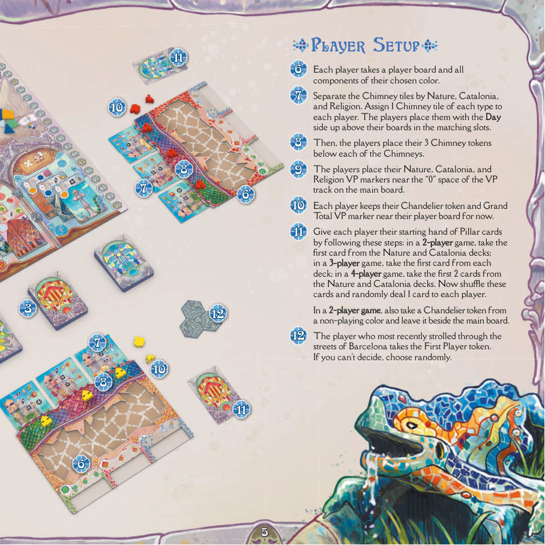
04如何游玩
高迪从自然界汲取无尽灵感，把树干的曲线、海螺的螺旋、植物的分叉形态编入他建筑的每一个元素。对他而言，自然不只是缪斯，更是主人：自然的有机几何与静默天才，指引他去建造那些仿佛「长出来」而不是「盖起来」的房子。
游戏进行 3 轮。每轮中，玩家从持有起始玩家标记的人开始，按顺时针轮流行动。轮到你时，你必须先把吊灯标记沿主版图上的吊灯顺时针移动，想走几格就走几格，然后执行你停留那一格所示的行动。所有玩家都把吊灯标记绕完一圈后，本轮结束，由起始玩家开启新一轮。
4.1 移动吊灯标记
- 如果这是你本轮的第一次移动（吊灯标记还在你玩家版图旁），你必须从吊灯轨最上方那一格开始移动（即印有该标记较小图形的那一格）。这一步算作你本回合移动的第一格，你也可以选择就停在那里（前提是该格空着——见下一条）。
- 你必须始终沿吊灯顺时针移动。想走几格就走几格，但不能选择停在已有其他玩家吊灯标记的格子上。
- 如果你移动结束时领先于所有其他玩家，本回合你将获得额外行动！
- 如果你绕完吊灯一整圈、到达轨道终点，你必须把吊灯标记从主版图上取下，放到自己玩家版图旁。然后，你激活吊灯中央的吊灯板块。如果你是本轮第一个到达终点的人，你还取得起始玩家标记——这对本轮的回合顺序没有影响，但下一轮你将是起始玩家。
- 如果轮到你行动，而你的吊灯标记已经离开主版图，你必须什么都不做，跳过回合。
4.2 双人局
玩双人局时，你还必须使用一个未参战颜色的吊灯标记。无论谁是起始玩家，该标记在回合顺序上始终视为最后一名玩家。
到它行动时，把该标记移到「能使它成为吊灯上最领先者」的第一个格子。它不执行任何行动、不做别的事，因此下一位玩家可以立即行动。
这个「第三位玩家」有可能抢先到达最后一格——如果那正是「能使它成为最领先者」的第一个格子。若出现这种情况，你们两位都无法执行吊灯板块上的两个行动（见 4.4），因为你们都不是第一个到达的人。不过，由于「第三位玩家」始终最后，它不会取走起始玩家标记；第一个到达吊灯轨终点的人类玩家才会取走它。
4.3 吊灯格
吊灯轨的每一格都印有一个图标，对应游戏中的某个行动（图标与行动说明见本书末尾）。每一格还印有若干个铅笔与锤子。铅笔与锤子的数量表示你停在该格时可以执行几次行动、以及可以执行哪一类行动。
- 每个铅笔让你把该格所示的行动执行一次。
- 每个锤子让你从以下三个选项中选一个执行一次：
- 把该格所示的行动执行一次，或
- 推进你 1 个烟囱标记，或
- 从手牌打出 1 张卡。
你能用哪些铅笔或锤子，取决于你的吊灯标记是否最领先：
最领先时
如果你的吊灯标记是吊灯上（顺时针方向）最领先的，你可以同时使用该格上的铅笔和锤子！
重要：已经到达最后一格并从主版图取下的吊灯标记，始终视为「最领先」，因此其他标记都不可能是「最领先」的那一个。
不领先时
如果你的吊灯标记不是最领先的，你可以使用该格上的铅笔或锤子，但不能两者都用；具体用哪一类由你选择。
例：Roser（红）把标记推进到最领先的格子，因此她本回合用了 1 个铅笔和 1 个锤子。Roser 的回合结束后，Irene（蓝）也推进到了那一格，所以她可以选择用 2 个铅笔、或用 1 个锤子。

4.4 中央吊灯板块
吊灯中央的格子很特殊：它没有铅笔也没有锤子，取而代之的是一块吊灯板块，上面始终印有 2 个行动。
- 如果你是第一个到达吊灯终点的人，你可以执行两个行动，顺序自定。
- 在第一个到达者之后抵达中央吊灯板块的玩家，只能执行这 2 个行动中的 1 个。
4.5 轮次结束
有玩家到达吊灯终点（并取下自己的标记）之后，轮次结束就临近了。其余玩家此时仍可继续轮流行动。注意吊灯上有一些格子颜色更深、偏红：当有玩家已经到达终点之后，若有玩家把标记移到这些深色格上、或到达吊灯终点，则他们在完成本回合行动后必须取下自己的吊灯标记。
当所有玩家都把吊灯标记从主版图取下后，本轮结束。从吊灯中央移除最上面一块吊灯板块。如果这是最后一块，游戏结束，进入终局计分（见 07 节）；否则，持有起始玩家标记的玩家开启下一轮。
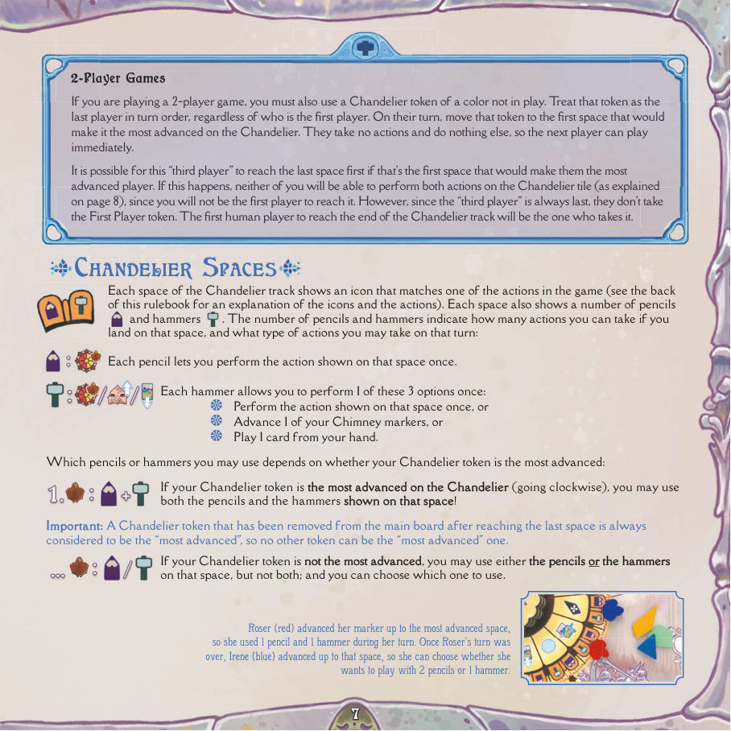

05获得胜利分
游戏中每当看到带数字的星形图标，就表示你获得与星形下方所示支柱类型相符的胜利分（VP）。
把对应的自然、加泰罗尼亚或宗教 VP 标记，在轨道上向前移动与标示数值相等的格数。
自然
主要来自打出的自然卡、自然烟囱的即时奖励。
加泰罗尼亚
主要在每轮结束时结算你的加泰罗尼亚列。
宗教
主要在游戏结束时结算宗教列。
06行动
任何时候你获得下列某个行动图标，就可以执行该行动。多数情况下这发生在你的吊灯标记停到吊灯某格时，但你也可能从其他来源（例如打出的卡牌）获得行动图标作为奖励。无论来自何处，所有行动的执行方式完全一致。
下文把每个行动都当作「单次行动」来描述，但请记住你可以多次执行它们——就像你停在有多个铅笔或锤子的吊灯格上那样。
你永远不会被强制执行任何行动——你随时可以放弃任意数量的行动。
你的回合中可执行的行动共有 4 种，它们出现在吊灯周围，或由锤子激活：
- 取一块特伦卡迪斯板块并放到你的玩家版图上（见 6.1）。
- 从主版图取一张卡加入手牌，手牌上限 4 张（见 6.2）。
- 从手牌打出一张卡到你玩家版图上，前提是你拥有所需数量的特伦卡迪斯板块（见 6.3）。
- 推进一个烟囱标记，前提是你拥有所需数量的特伦卡迪斯板块，并获得奖励（见 6.4）。
此外还有一个万能行动，允许你执行吊灯周围的任何其他行动（见 6.5）。
6.1 取特伦卡迪斯板块
该行动让你从主版图取 1 块特伦卡迪斯板块。
- 若图标显示特定形状和／或颜色，你必须取与之相符的板块。
- 若图标显示黑色形状，你可以选择与该形状相符的任意颜色。
- 若图标显示彩色圆圈，你可以选择与该颜色相符的任意形状。
若你在同一回合取多于 1 块，它们可以来自同一个或不同的供应格。
领取与拥有
视你正在执行的行动而定，你可能领取若干所示资源，也可能只是需要拥有它们。
- 黑色描边数字
- 表示你从供应区领取该数量。例：从主版图领取 1 块你自选形状与颜色的特伦卡迪斯板块。
- 红色描边数字
- 表示你必须至少拥有该数量才能执行此行动，但不消耗它们（可以留着）。
例：你需要拥有 6 块同色特伦卡迪斯板块（颜色自选）。也就是说，如果你手上有 6 块蓝色，可以全用蓝的；但不能拿 4 块绿加 2 块灰凑数。
当规则要求你拥有「自选颜色」的若干板块时，它们必须同色，形状不限。
当你需要拥有若干特定形状的板块时，它们不必同色。
放置规则
你获得的全部特伦卡迪斯板块都必须放到玩家版图上，各自放在与板块形状相符的空格。板块可以翻面和／或旋转来匹配格子。
如果你发现自己无法放置某块板块，因为已无匹配的空格，你必须把它退回原处，并可以改取另一块。若你的玩家版图已满，就不能再取板块。
如果你取走了主版图某一格上的最后一块特伦卡迪斯板块，你可以额外执行 1 个行动（见下文「供应耗尽」）。在你回合结束时，你要从袋中抽 5 块新板块，补到那块空格上。
你需要收集特伦卡迪斯板块来满足打牌的条件（见 6.3）。此外，如果你能在玩家版图上形成同色的板块组合，终局时还能获得额外 VP（见 07 节）。
相邻与组合
在玩家版图上，两块特伦卡迪斯板块只要有一条边相接，就算「相邻」；若只是一块板块的角碰到另一块的角，则不算。为便于辨认，相邻的格子之间印有细小的连接线。
任意数量彼此相连、形成不间断相邻序列的板块，称为一个组合（group）。除非规则另有说明，组合还按颜色区分，因此多数时候你检查的是「某颜色的相连板块组合」。
例：本例中该玩家有由 2 块黄色特伦卡迪斯组成的组合，因为它们彼此相连。灰色与绿色板块与那块黄色相邻，但它们彼此不相邻。
6.2 取卡
这些图标让你从主版图的某个窗口取一张与支柱类型相符的卡，加入手牌。
若你用「任意类型」图标取多于 1 张，它们可以是相同或不同的支柱类型。
你能取主版图上的所有卡，不只是每一类的顶上那张。在你把某个窗口的 3 张卡全部取走之前，不要补充新卡。
如果你取走了某个窗口的最后一张卡，你可以执行印在该窗口正上方木质格上的额外行动（见下文「供应耗尽」）。在你回合结束时，你从对应牌堆抽 3 张新卡补满该窗口。
你的手牌永远不能超过 4 张。若你已满 4 张却还想取新卡，可以先弃掉手牌腾出空间。
卡牌构成
- 打牌条件
- 印在卡上的颜色与数字。例：你需要在玩家版图上至少拥有 2 块蓝色特伦卡迪斯板块。
- 奖励
- 这张卡为你提供的奖励。
- 类别
- 宗教卡与烟囱效果在计分或给奖励时会参照这些类别。「高迪生平」是万能类别，这类卡可以算作任何其他类别。
- 支柱类型
- 自然、加泰罗尼亚或宗教，由颜色与卡背表示。
- 图面
- 高迪的某件作品，或他生平中的某个重要事件。
- 编号
- 宗教卡上印有编号，便于在本书末尾的速查中识别。
卡牌类别
立面（Façade）· 门（Door）· 花园（Garden）· 室内（Interior）· 天花板／屋顶（Ceiling / Rooftop）· 塔楼（Tower）· 雕塑（Sculpture）· 铁艺／玻璃（Iron / Glass）· 家具（Furniture）· 高迪生平（Life of Gaudí）
供应耗尽
注意特伦卡迪斯格旁与卡牌窗口上方的图标。如果你取走了该格／该窗口的最后一块板块或最后一张卡，你可以在本回合的任意时点触发这些奖励行动。
若你在一回合内清空了多个格或窗口，可以执行多个这样的额外行动；但每种行动每回合只能触发一次。
若你清空了某格或某窗口，在你回合结束时、轮到下一位玩家之前，你必须补满：空的特伦卡迪斯格从袋中随机抽 5 块补上；空的窗口从对应牌堆抽 3 张补上。若袋已空，就尽可能多补，并从最左侧开始顺时针逐格填充。若某个牌堆用完，就尽可能补满，然后继续游戏。
6.3 打出卡牌
该图标表示：只要你满足条件，就可以打出一张卡（见下）。把卡放进玩家版图下方对应的列，放法要保证每张卡顶部的横幅始终可见，同时遮住下一张卡上的颜色图标。每列的卡数没有上限。
该行动出现在吊灯上，同时也是你使用锤子时可以选择的选项之一。
打牌条件
每张卡都有一个由颜色与数字构成的条件。打这张卡时，你必须把它放在对应列的最下方，然后把该列中所有数字相加。总和就是你在玩家版图上必须拥有（不消耗）的、与卡上颜色相符的特伦卡迪斯板块的最低数量（形状不限），它们不必相邻。
若卡上显示黑色图标，你可以自选颜色，但所有板块必须同色。
如果你发现按这些条件无法合法放置该卡，你必须把它退回手牌。
结算列
当规则要求你「结算某一列」时，你获得该列中每张卡横幅上印有的全部奖励，以及你玩家版图上该列上方所示的任何奖励。
自然卡
你在自然列打出一张卡之后（仅限该列），你立即结算该列：按你自选的顺序获得该列所有卡横幅上的全部奖励，其中包括玩家版图上该列上方所示的 4 点自然 VP。在另外两列打牌没有这种即时效果。
加泰罗尼亚卡
它们可以在轮次结束时结算，结算次数等于中央吊灯板块所示的次数——前提是你到达该格并选择了那项奖励。
宗教卡
与其他卡不同，宗教卡不提供直接奖励。每张宗教卡给你一定数量的宗教 VP，乘以你达成某个目标的次数，通常在游戏结束时结算。
其中有些目标参照你已打出的某类别卡牌数量。例如，你可能每有一张「门」类卡就得 3 VP。你的「高迪生平」卡视为万能，可以随时当作你需要的任何类别来计分，因此也能计入这类卡的分数。
另有图标允许你结算并计分你拥有的某一张宗教卡，而不是整列。
示例打出一张自然卡
Xavier 想打出这张自然卡。他必须在玩家版图上拥有（不支付）共 4 块绿色特伦卡迪斯板块。若满足，他就结算自己的自然列：把自然 VP 标记前进 7 格，并从主版图取 1 块任意形状的蓝色特伦卡迪斯板块。
6.4 推进烟囱标记
高迪标志性的烟囱——尤其是桂尔宫屋顶那些——以超现实、雕塑般的造型闻名，模糊了功能与幻想的界线。这些奇思妙想的结构常覆满彩色马赛克或扭曲的石材，展现他把自然灵感与建筑创新熔于一炉的独特手法。
该行动不出现在吊灯上，但它是你使用锤子时可以选择的选项之一，也会在游戏的其他环节作为奖励出现。
把你 1 个烟囱标记移到它所在烟囱的下一个位置，即自下而上推进。视你想移去的那一格上所示的数字与形状，你必须在玩家版图上拥有（不消耗）至少该数量的、与所示形状相符的特伦卡迪斯板块（颜色不限，也不必相邻）。
视你推进的是哪条烟囱，你会获得即时奖励或一项在游戏结束时生效的效果。
若你的某个烟囱标记到达该烟囱的顶端，该标记在余下的游戏中不能再移动。
示例推进到顶端
Neus（黄）想把她的烟囱标记推进到加泰罗尼亚烟囱的最后一步。为此，她需要在玩家版图上至少拥有 5 块梯形特伦卡迪斯板块（颜色不限）。若满足，她只需把标记上移 1 格，然后立即结算自己的加泰罗尼亚列（顶端格的奖励）：获得该列卡牌上以及玩家版图该列上方所示的全部分数（共 7 点），并取 1 块自选形状与颜色的特伦卡迪斯板块。
此后，她不能再推进这个标记。
烟囱板块奖励一览
以下是你在烟囱板块上推进标记时能获得的全部奖励（本书末尾亦有汇总）。
即时类
- 立即结算你的自然列。
- 立即从主版图取 1 块任意形状与颜色的特伦卡迪斯板块。
- 立即结算你的加泰罗尼亚列。
- 立即获得 5 点加泰罗尼亚 VP。
- 立即结算你宗教列中的 1 张卡。
- 你可以立即打出手牌中的 1 张卡，无视其条件。
- 你可以立即从主版图取任意一张卡。
- 本回合结束后，立即再进行一个回合，再次移动你的吊灯标记——除非你已到达吊灯轨终点。
终局类
- 游戏结束时，在结算完你的宗教列之后，你可以把 1 个 VP 标记恰好减 3 点，并把另一个标记增加相同的点数。
6.5 万能行动
该图标表示你可以选择并执行吊灯周围的任何其他行动（不含中央板块上的行动）。该行动旁同时印有铅笔与锤子，因此若你两个图标都用在这个格上，你可以选择执行吊灯上最多 2 个不同的行动。
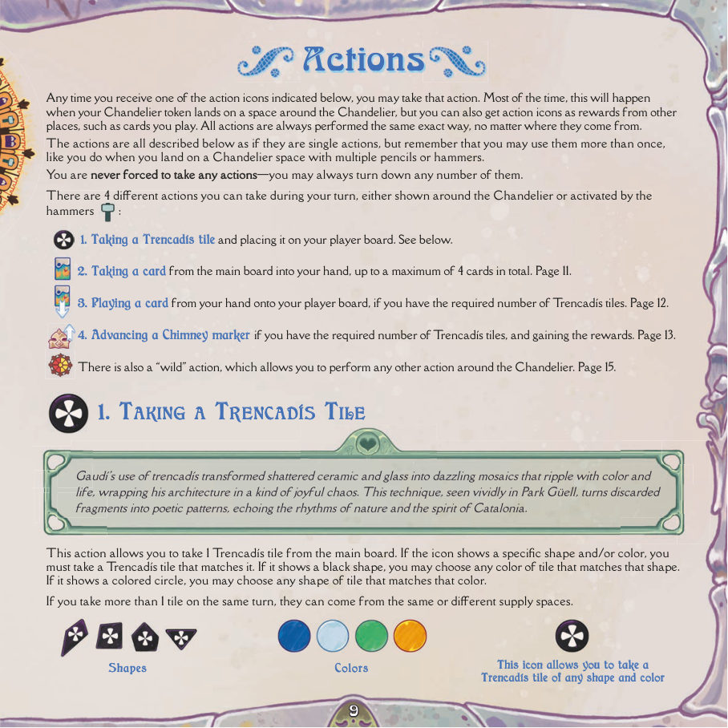
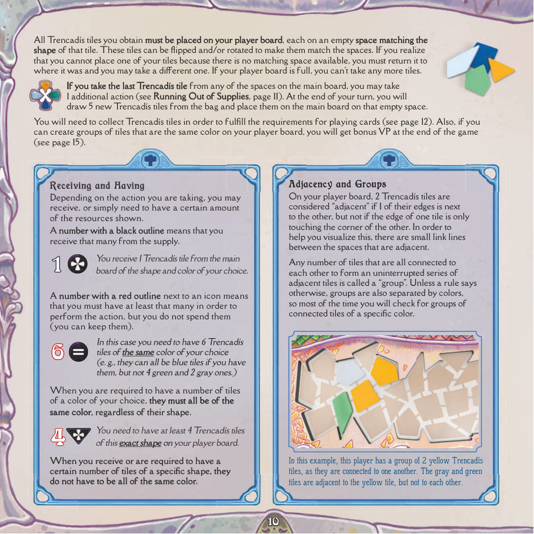

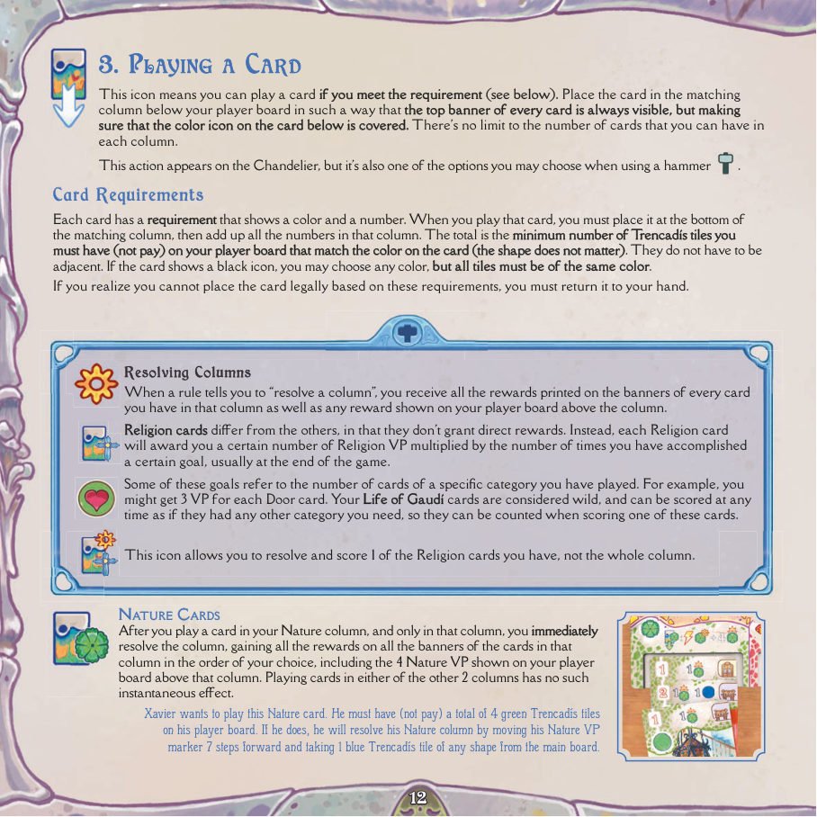
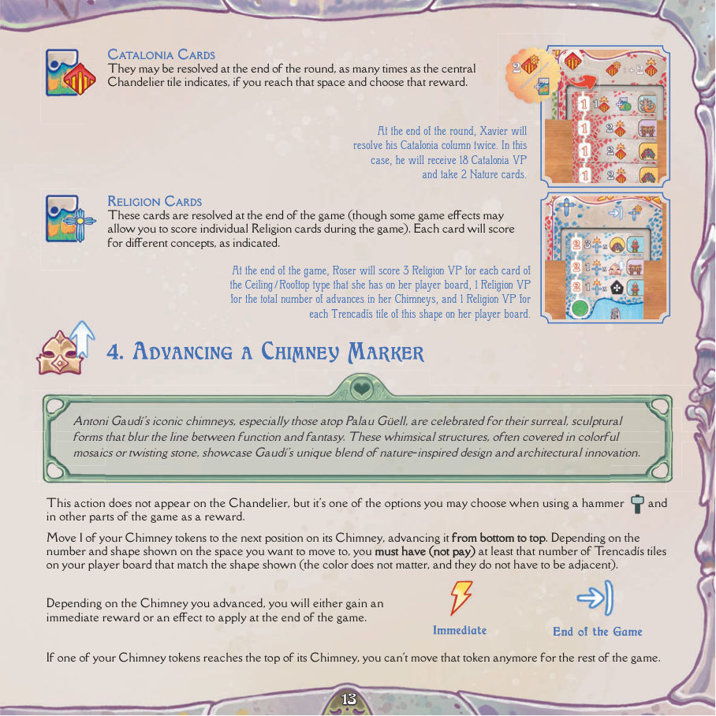
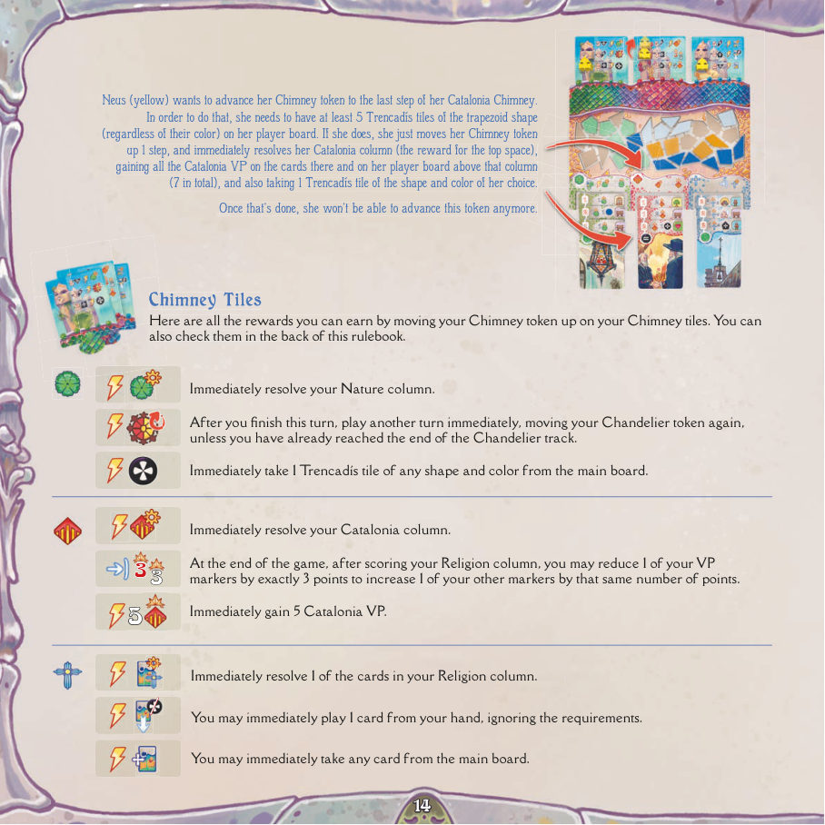

07终局计分
在某位玩家移除最后一块吊灯板块的那一轮结束时，游戏结束，进入终局计分。
- 先结算宗教列每位玩家先结算自己的宗教列。结算前，把你所有的「高迪生平」卡最后一次指派到自选的一个类别，因为部分卡会依据这些类别计分。相应地推进你的宗教 VP 标记。
- 加泰罗尼亚烟囱第 2 步效果如果你已到达加泰罗尼亚烟囱的第 2 步，此时可以应用该效果。
- 取最低两项计入总分把你最低的两个 VP 标记的数值相加，把总分 VP 标记放在该总值上。
- 特伦卡迪斯组合加分然后，按你玩家版图上第二大与第三大的同色单一组合中的板块数量，把总分 VP 标记前进相应格数（这两个组合可以是不同颜色）。
最终总分最高者获胜！若平手，则总分以外最领先的那个 VP 标记所属的并列玩家获胜。若仍然平手，并列玩家共享胜利。
终局计分示例
示例Roser 的终局计分
- Roser（红）先结算她的宗教列。第一张卡按「每张天花板／屋顶卡」计 3 点宗教 VP，她有 3 张这类卡，外加 1 张指派为天花板／屋顶的「高迪生平」卡，共 12 VP。她还得到 6 VP（2 × 宗教烟囱上已推进的 3 步）与 8 VP（2 × 已打出的 4 张加泰罗尼亚卡），合计 26 点宗教 VP，加到她原本为 4 的宗教分上。
- 接着，由于她已到达加泰罗尼亚烟囱的第 2 格，她把加泰罗尼亚标记后退 3 格、宗教标记前进 3 格。
- 然后，她把自己最低的两个标记（自然与宗教）相加，共 64 VP，用总分 VP 标记记录。
- 最后，她结算特伦卡迪斯组合。绿色与黄色组合并列第一、第二，因此其中一个作为她的第二大（6 VP），灰色的是第三大（再 4 VP），最终得分 74 VP。
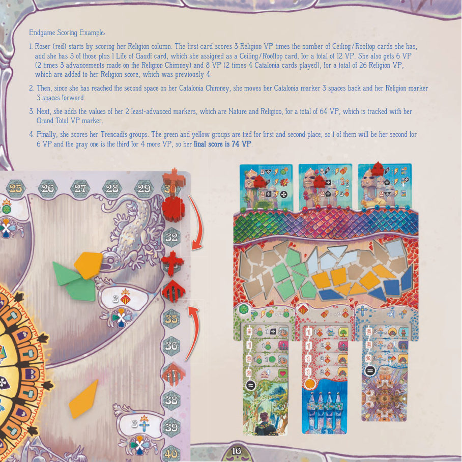
08专家模式
用标准规则玩过几局之后，你也许想再提高一点难度。此时仍按基础规则游玩，但把下列指定章节替换为以下改动。
8.1 设置改动
- 把主版图放在桌上，夜晚面朝上。
- 把全部特伦卡迪斯板块放进布袋洗匀，从袋中随机取 4 块放到 5 个特伦卡迪斯格中的每一格（每格各 4 块，共 20 块）。注意：此后每次需要补满这些供应格时，你都抽 4 块而非 5 块。
- 把烟囱板块按自然、加泰罗尼亚、宗教分开。每套背面朝下洗匀，随机给每位玩家分配每类各 1 块。玩家把板块夜晚面朝上放在自己版图上方的对应槽位。
- 起始手牌不再随机发放：从起始玩家右手边的玩家开始，按逆时针进行，每位玩家拿起这组卡，选 1 张留下，然后把剩余的卡传给下一位玩家。
8.2 规则改动
- 取卡行动（见 6.2）
- 你不能再弃掉手牌来为自己想取的新卡腾出空间。
- 供应耗尽（见 6.2）
- 回合结束时补满空的特伦卡迪斯格，改为从袋中随机抽 4 块，而非 5 块。
- 打牌条件（见 6.3）
- 要打出一张卡，你拥有的所需数量特伦卡迪斯板块必须属于同一个相连组合，且颜色与卡上所示一致。
- 推进烟囱标记（见 6.4）
- 你拥有的所需数量板块必须属于同一个相连组合，且形状与所示一致。注意这个组合可以包含不同颜色与形状，只要其中含有你需要的形状即可。
8.3 烟囱的被动效果
烟囱具有「被动」效果：一旦激活，在余下的游戏中，每当满足所示条件时就会对你生效（见附录 A 专家烟囱板块）。除了只获得一次的即时奖励之外，你始终可以使用这些被动效果，以及你的烟囱标记已经走到或经过的全部终局效果。
部分被动效果在你打出某类别的卡时给你奖励。「高迪生平」卡在触发这类烟囱效果时，可以在打出的当下当作任何其他类别使用。
如果你可以使用多于 1 个「打出某类别卡时触发」的烟囱奖励，你只能选择其中 1 个。终局结算宗教卡时，你可以重新指派这些卡的类别，可能与打牌时所选的类别不同。
8.4 专家模式的终局计分
- 先结算宗教列所有玩家必须先结算自己的宗教列。结算之前，把你所有的「高迪生平」卡指派到自选的一个类别，因为部分卡会依据这些类别计分。若你的烟囱标记已到达或经过任何终局效果，你可以把每个效果各应用一次。视效果而定，有些在终局计分开始前应用，有些在计分过程中应用。
- 总分计算把你第二低的 VP 标记数值，加上最低那个标记数值的两倍，把总分 VP 标记放在所得值上。
- 组合加分你第二大的同色组合中每块板块，让总分 VP 标记前进 1 格；你第三大的同色组合中每块板块，前进 2 格（这两个组合可以是不同颜色）。
总分最高者获胜！若平手，则总分以外最领先的那个 VP 标记所属的并列玩家获胜。若仍然平手，并列玩家共享胜利。
示例专家模式终局计分
- Roser（红）先结算她的宗教列。第一张卡按「每张天花板／屋顶卡」计 3 点宗教 VP，她有 3 张这类卡，外加 1 张指派为天花板／屋顶的「高迪生平」卡，共 12 VP。她还得到 8 VP（2 × 宗教烟囱上已推进的 4 步）与 8 VP（2 × 已打出的 4 张加泰罗尼亚卡），合计 28 点宗教 VP，加到她原本为 6 的宗教分上。
- 她把自己第二低的 VP 标记（自然），加上最低标记（宗教）的两倍，共 103 VP，用总分标记记录。
- 然后结算特伦卡迪斯组合。绿色与黄色组合并列第一、第二，其中一个作为第二大（6 VP），灰色的是第三大（再 8 VP），最终得分 117 VP。
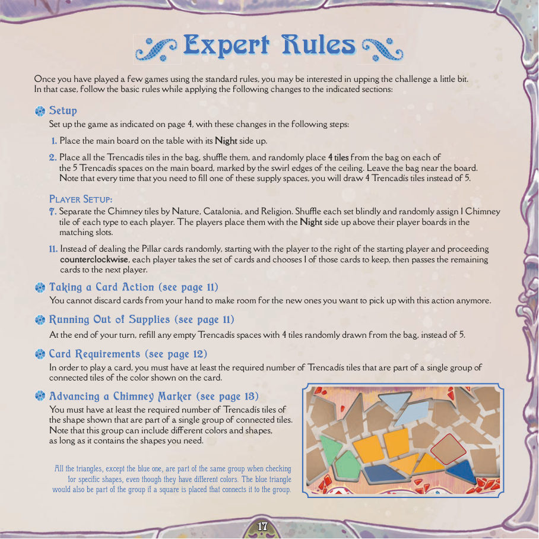
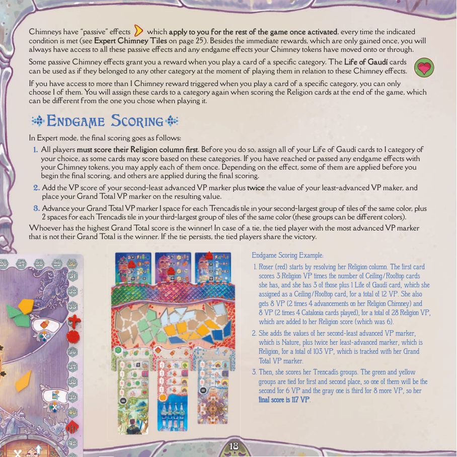
09单人模式
想象一下要与这样的人对抗！在本作的单人模式中，你将与高迪本人对战。为此，你需要先熟悉专家模式。
按专家模式的两人局设置游戏（不能玩单人休闲局），包括使用第三个吊灯标记，并作以下改动：
- 高迪不需要玩家版图，也不需要烟囱或烟囱标记。
- 高迪只使用总分 VP 标记。
- 你是起始玩家，同时也是第一个从设置时为此翻出的起始卡中挑选的人。把你没选的那张卡放在桌上一个专属于高迪的区域。
开始游戏前，选择一个难度：简单、普通、困难、疯狂。
9.1 游戏流程
你完全按多人局的方式游玩。只有游戏第一轮例外：你先行动，然后高迪行动，接着虚拟第三玩家行动，之后才轮回到你。第一轮结束后，照常进行——由上一轮取得起始玩家标记的一方（你或高迪）先开始。
9.2 高迪的回合
高迪行动时，他会把吊灯标记移到第一个能完整执行该格所示行动的格子。这意味着：如果他的标记是最领先的，他必须能够执行该行动「铅笔数 + 锤子数」那么多次；如果他的标记不是最领先的，他可以执行「铅笔数或锤子数中较大者」那么多次。若他无法完整执行，他会继续沿顺时针检查吊灯上的格子，直到找到能执行的那一格。
除上述规则外，如果在他回合开始时，高迪的标记是吊灯上最后一个，且他的标记与顺时针方向下一个标记之间有 3 个或更多空格，高迪会跳过那些空格，直接把标记移到第一个既让他成为最领先者、又允许他完整执行行动的格子。
示例高迪选格
高迪以黄色行动。要以最领先者的身份执行「取绿色特伦卡迪斯板块」这一行动，主版图上至少需要有 3 块绿色板块可取；如果他不是最领先者，则至少需要 2 块，因为该行动有 2 个铅笔。否则他就会跳过这一格去检查下一格，因为他无法完整执行该行动。
9.3 虚拟第三玩家的回合
与双人局一样，「虚拟」第三玩家始终第三个行动，无论谁是起始玩家。到它行动时，把它的吊灯标记移到第一个能使它成为顺时针方向最领先者的格子；但与普通双人局不同，它会尝试把该行动执行尽可能多次，上限为该格铅笔与锤子之和。与双人局相同，这位第三玩家不能取得起始玩家标记，即使它第一个到达吊灯最后一格——只有你或高迪能取得。
高迪与虚拟第三玩家都忽略因他们耗尽供应或卡牌而触发的行动，也从不激活他们所取卡牌上的图标。
高迪与虚拟第三玩家取走的全部特伦卡迪斯板块与卡牌，都存放在桌上高迪的区域内。卡牌按类型分放 3 列（每类 1 列），左右顺序与玩家相同。特伦卡迪斯板块按颜色横排、按形状纵排（见原书图示），方便你一眼看出高迪每种颜色与形状各有多少块。
9.4 高迪的行动细则
- 取特伦卡迪斯板块
- 当需取特定形状的板块时，在可选板块中，取高迪该形状数量最少的那种颜色。当需取特定颜色的板块时，取高迪该颜色中数量最少的那个形状。两种情况下，若有多块板块符合条件，从这些板块所在的第一个格子取起——从最左侧格开始，按顺时针推进。若同一格上有多块符合条件，由你选择高迪与虚拟第三玩家取哪一块。
- 取卡
- 取卡时，永远取高迪与虚拟第三玩家所取类型中最下面的那张。当需取「任意类型」时，取高迪数量最少的类型；若并列，从并列选项中最左侧的那一列取。
- 打出卡牌／万能行动
- 高迪与虚拟第三玩家都把「打出卡牌」图标与「万能行动」图标视为「取一张任意类型的卡」行动。
- 中央吊灯板块
- 当高迪或虚拟第三玩家激活吊灯中央的格子时，他们只获得 1 次「取一张任意类型的卡」行动——不论板块上的图标是什么，也不论他们是否为第一个到达者。
9.5 高迪的终局计分
你照常完成自己的终局计分后，按以下方式计算高迪的分数：
- 若你在开局选择的是简单／普通／困难难度，则分别从他每一列中移除最前面 3／2／1 张卡。
- 把他所有卡上的 VP 数值相加（包括宗教 VP），其中所有倍率一律按 1 计。然后把这个总和乘以 3；若你选择的是疯狂难度，则乘以 4。给他相应的总分 VP。
- 再按他第二多的那种颜色的特伦卡迪斯板块数量增加该值，并按他第三多颜色板块数量的 2 倍再增加。
如果你的总分 VP 高于高迪，你获胜！
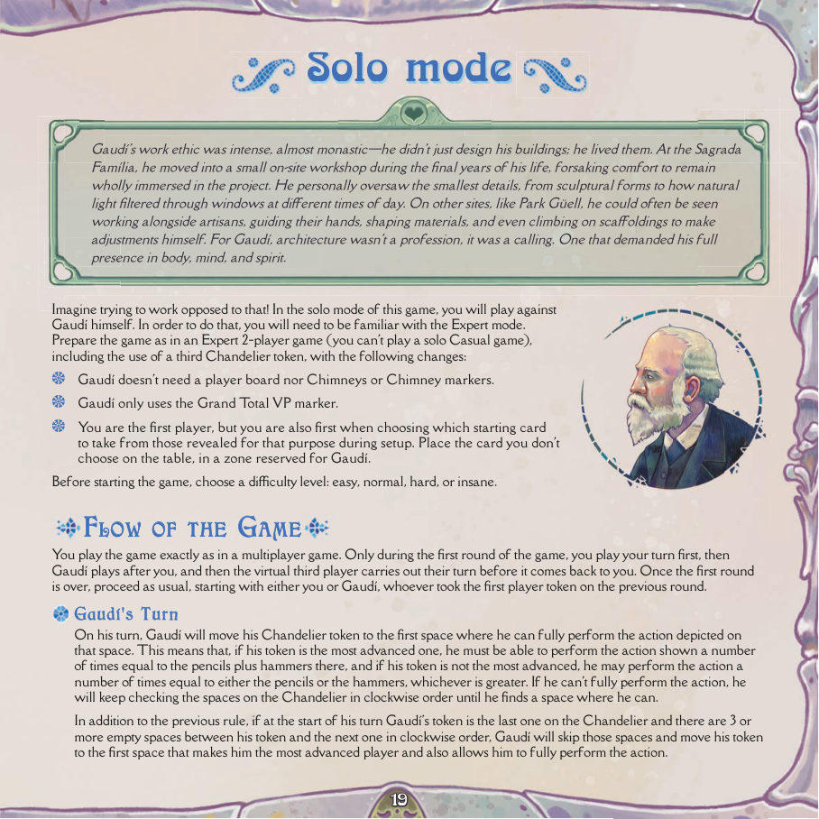
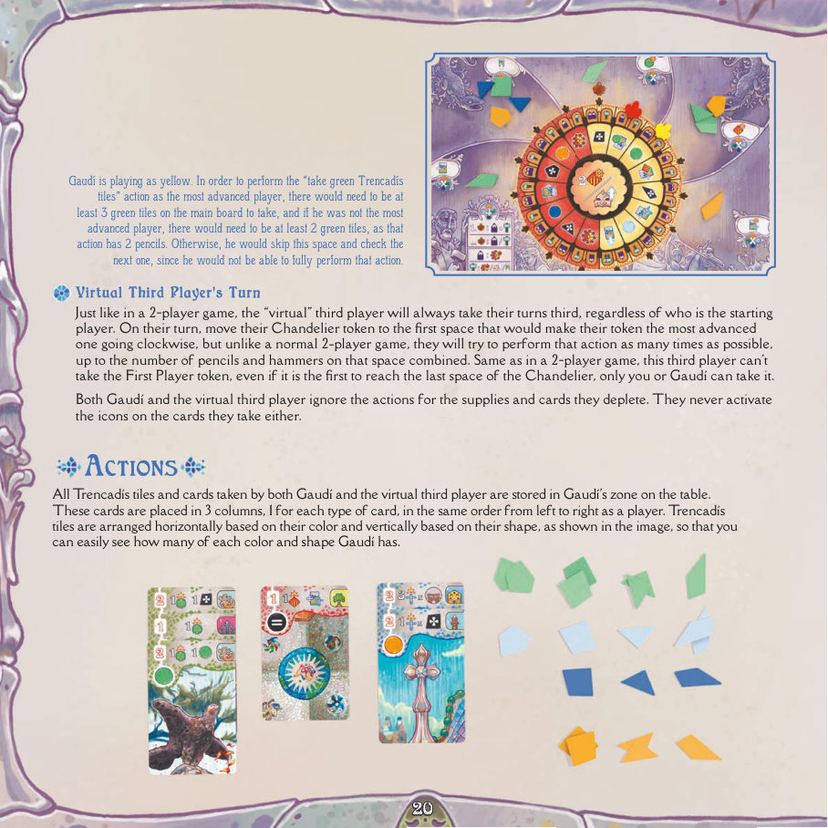
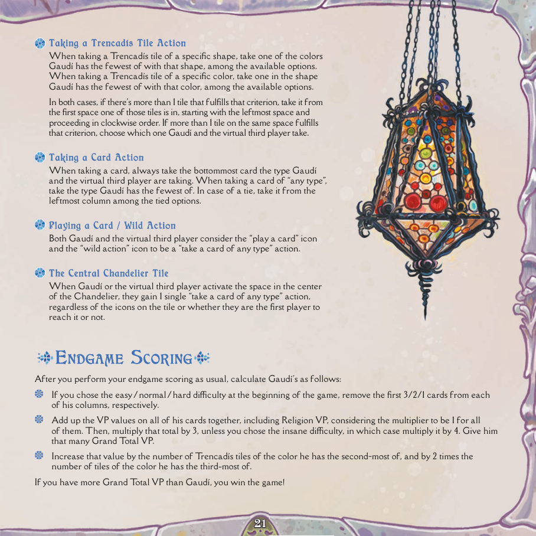
10附录 A · 专家烟囱板块
专家模式的烟囱板块分为「即时」与「被动」两类效果。即时奖励只获得一次；被动效果一经到达便持续生效。以下按三根支柱分组列出全部效果。
自然烟囱（Nature）
- 你每往玩家版图上放置 1 块特伦卡迪斯板块，获得 2 点自然 VP。
- 每当你因吊灯上的某个行动而从主版图取至少 1 块特伦卡迪斯板块时，你可以多取 1 块同类型的板块。
- 每当你打出「天花板／屋顶」或「雕塑」卡时，所需的特伦卡迪斯板块总数视为少 2 块。
- 立即获得 5 点自然 VP。
- 你可以立即把 1 个 VP 标记恰好减 7 点，把另一个标记增加相同的点数。
- 立即结算你的自然列两次。
- 每当你清空主版图上的一个特伦卡迪斯供应格，你可以从主版图额外取 1 块特伦卡迪斯板块。每回合只能这样做一次。
- 你可以立即在其他任意一条烟囱上前进 1 步，无视其条件。
- 本回合结束后，立即再进行一个回合，再次移动你的吊灯标记——除非你已到达吊灯轨终点。
- 每当你往自然列打出一张卡时，所需的特伦卡迪斯板块总数视为少 2 块。
- 立即结算你的自然列。
- 每当你打出「雕塑」或「花园」卡时，你可以从主版图取 1 块特伦卡迪斯板块。
- 立即按你玩家版图上每块蓝色特伦卡迪斯板块获得 2 点自然 VP。
- 你可以把吊灯标记移到其他玩家已占据的同一格上。若你前方没有其他玩家的标记，你可以激活全部铅笔与锤子。此规则不适用于吊灯中央那格。
- 每当你打出「花园」或「天花板／屋顶」卡时，获得 3 点自然 VP。
- 立即从版图上取最多 3 块任意形状与颜色的特伦卡迪斯板块。
加泰罗尼亚烟囱（Catalonia）
- 每当你激活吊灯中央的板块，结算你的加泰罗尼亚列。
- 每当你往加泰罗尼亚列打出一张卡时，所需的特伦卡迪斯板块总数视为少 2 块。
- 每当你打出「家具」或「门」卡时，获得 3 点加泰罗尼亚 VP。
- 每当你激活吊灯中央的板块，你可以打出 1 张卡。
- 立即获得当前吊灯板块上的奖励。
- 每当你激活吊灯中央的板块，你可以从主版图取 2 块不同形状的特伦卡迪斯板块。
- 每当你打出「室内」或「门」卡时，所需的特伦卡迪斯板块总数视为少 2 块。
- 立即获得 5 点加泰罗尼亚 VP。
- 每当你激活吊灯中央的板块，你可以把 1 个 VP 标记恰好减 3 点，把另一个标记增加相同的点数。
- 立即结算你的加泰罗尼亚列两次。
- 每当你激活吊灯中央的板块，你可以取 1 张卡。
- 每当你激活吊灯中央的板块，获得 2 点加泰罗尼亚 VP。
- 每当你激活吊灯中央的板块，按你玩家版图上每块绿色特伦卡迪斯板块获得 2 点加泰罗尼亚 VP。
- 每当你激活吊灯中央的板块，你可以从主版图取 2 块不同颜色的特伦卡迪斯板块。
- 立即结算你的加泰罗尼亚列。
- 每当你激活吊灯中央的板块，你可以打出一张「家具」或「室内」卡，所需板块总数视为少 2 块。
宗教烟囱（Religion）
- 游戏结束时，把你宗教卡上的宗教 VP 数值视为高 1 点，再乘以你达成条件的次数。
- 游戏结束时，在结算完你的宗教列之后，你可以把 1 个 VP 标记恰好减 3 点，把另一个标记增加相同的点数。
- 游戏结束时，你可以打出手牌中的 1 张卡，无视全部条件。此行动可照常触发其他游戏效果。
- 每当你打出「铁艺／玻璃」或「塔楼」卡时，获得 2 点宗教 VP。
- 立即获得 4 点自然、加泰罗尼亚与宗教 VP。
- 每当你往宗教列打出一张卡时，所需的特伦卡迪斯板块总数视为少 2 块。
- 每当你打出「塔楼」或「立面」卡时，所需的特伦卡迪斯板块总数视为少 2 块。
- 你可以立即按你玩家版图上每块灰色特伦卡迪斯板块取 1 张卡。
- 立即结算你宗教列中的 1 张卡，其 VP 按自然或加泰罗尼亚 VP 计入，而非宗教 VP。
- 每当你取 1 张卡，你可以打出 1 张卡。
- 立即结算你宗教列中的 1 张卡。
- 立即获得 5 点宗教 VP。
- 你可以立即打出手牌中的 1 张卡，并按你玩家版图上每块黄色特伦卡迪斯板块，获得 2 点与该卡支柱类型相符的 VP（自然、加泰罗尼亚或宗教）。
- 你的手牌上限现在为 6 张。若你因吊灯上的某个行动而从主版图取至少 1 张卡，你可以多取 1 张同支柱类型的卡。
- 每当你打出「立面」或「铁艺／玻璃」卡时，你可以取 1 张卡。
- 游戏结束时，按你手中每张卡获得 2 点宗教 VP。


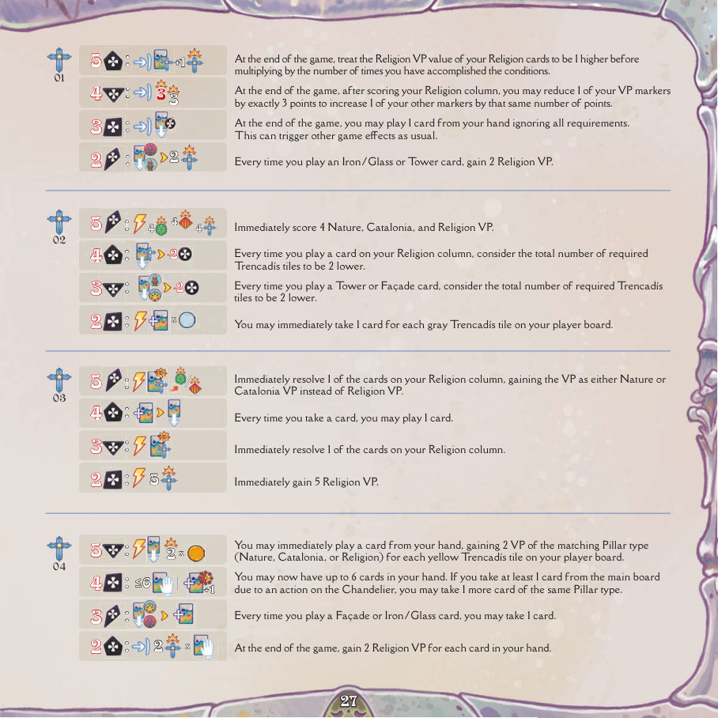
11附录 B · 宗教卡详解
33 张宗教卡共有 15 种计分方式，原书按卡牌编号分组列出。
| 卡牌编号 | 计分方式 |
|---|---|
| 01–04 | 你玩家版图上每块所示颜色的特伦卡迪斯板块，得 1 点宗教 VP。 |
| 05–08 | 你玩家版图上每块所示形状的特伦卡迪斯板块，得 1 点宗教 VP。 |
| 09 | 你已完成的每一格烟囱推进，得 1 点宗教 VP。 |
| 10 | 每一个位于最顶端的烟囱标记，得 5 点宗教 VP。 |
| 11 | 你推进得最少的那条烟囱上，每一格推进得 4 点宗教 VP。 |
| 12–14 | 所示特定烟囱上每一格推进，得 2 点宗教 VP。 |
| 15 | 你玩家版图上每凑齐一组「每种颜色各 1 块」，得 2 点宗教 VP。 |
| 16 | 你玩家版图上每凑齐一组「每种形状各 1 块」，得 2 点宗教 VP。 |
| 17 | 你已打出的卡牌中，每一个不同类别得 1 点宗教 VP。 |
| 18 | 你卡牌最少的那一列中，每张已打出的卡得 4 点宗教 VP。 |
| 19–21 | 你已打出的每张所示支柱类型的卡，得 2 点宗教 VP。 |
| 22–30 | 你玩家版图上每张所示类别的卡，得 3 点宗教 VP。 |
| 31 | 你自选的一列中，已打出卡牌上的每一个不同类别，得 2 点宗教 VP。 |
| 32 | 你已打出的每张卡，得 1 点宗教 VP。 |
| 33 | 你玩家版图上每 3 块特伦卡迪斯板块，得 1 点宗教 VP。 |

12附录 C · 图标一览
以下图标出现在主版图、吊灯板块与卡牌上。
资源与数量
- 把所示奖励执行该次数。
- 拥有所示数量的该特伦卡迪斯板块（拥有即可，不消耗）。
- 从主版图取 1 块所示形状、颜色任选的板块（见 6.1）。
- 从主版图取 1 块所示颜色、形状任选的板块（见 6.1）。
- 从主版图取任意 1 块特伦卡迪斯板块（见 6.1）。
- 打出 1 张卡（见 6.3）。
- 打出 1 张所示支柱类型的卡（见 6.3）。
- 从主版图取任意 1 张卡（见 6.2）。
- 从主版图取 1 张所示支柱类型的卡（见 6.2）。
效果与行动
- 无视条件（见 6.1）。
- 结算所示那一列（见 6.3）。
- 结算你宗教列中的 1 张卡（见 6.3）。
- 获得所示支柱类型的 VP（见 05 节）。
- 推进一个烟囱标记，按其条件执行（见 6.4）。
- 选择吊灯上的任何其他行动来执行（中央板块除外）（见 6.5）。
- 再进行一个回合（见 6.4）。
- 游戏结束时，你可以把 1 个 VP 标记恰好减去所示点数，把另一个标记增加相同的点数（见 6.4）。
- 当你取走某个供应格的最后一块特伦卡迪斯板块时触发（见 6.1）。
13背景：想象安东尼·高迪
以下为原书收录的专文，作者 Jordi Graupera（建筑哲学教授），英译 Louise Keohane。此处依原文全文译出。
安东尼·高迪是加泰罗尼亚建筑师。1852 年生于拜什坎普（Baix Camp），1926 年逝于巴塞罗那。他创造了一种全然没有先例、至今也没有继承者的建筑风格。每年有数百万人参观他的建筑，尤其是仍未完工、至今仍在施工的圣家堂，还有米拉之家、桂尔宫与桂尔公园，以及别具一格的巴特罗之家与维森斯之家。
传统上他被视为现代主义（Modernisme）者，其作品与该运动同代人有若干共通元素；但事实上，他的作品很难归类。要更好地理解他，你需要知道高迪一生有三大热爱：自然、上帝与加泰罗尼亚。在我们隔着一个多世纪的遥远视角看来，这像是三种不同的建构；但对他而言，并无必要把这三种爱分成三个词、三种想法或三个概念。高迪可以把它们逐层叠加、融为一体。
乍看之下，我们会说高迪像任何雕塑家那样模仿自然形态：桂尔宫阳台栏杆上的骷髅、圣家堂外墙上的动物、几乎每座建筑里都能见到的锻铁植物纹样，都是显而易见的例子。再深入一些看，会发现立面的蜿蜒形态、像生了根一样扎入地下的柱子、末端呈枝条状的支柱，以及他为多个项目设计的家具那种有机外观——这些都证明他的灵感不止于复制植物与动物。对高迪而言，自然是关于世界、关于我们所占据的空间的知识来源。当然，这也帮他造出更好的建筑，启发更坚固、更宽敞、更契合某种人性观念的构造。
高迪的建筑意在对抗 20 世纪之交人们所遭受的社会与精神解体——那些被工业社会塞进城市与方盒公寓、陷入与真实世界无关的异化与绝望处境的人。
这种对自然的观察，其根基不只是那个体弱敏感、无法上学、被留在留多姆斯（Riudoms）家中四处游荡的孩子（当地口述传说坚持他生于此，与几公里外雷乌斯城的文献记载相左）。这个「被蜗牛形状迷住、被蚂蚁的结构强度吸引」的典型孩童形象，并不足以解释高迪的天才——那天才同样得益于对建筑史、数学与几何构造的近乎强迫式的研究。
他是一位解决了建筑学数百年难题的天才：如何构造一个巨大的开放空间。哥特建筑曾试图用中殿外侧的大量支撑来解决——比如飞扶壁（看看巴黎圣母院的航拍照片就能体会其规模）。高迪靠对自然中作用力的更深理解，解决了这个问题，并削去了大部分此外部骨架。然而他并非只凭直觉工作，而是把这些想法与技术功力熔合。讽刺的是，他恰在历史那一刻达成了平衡——而那一刻，这个解法本身已不再重要：技术上改良的建筑材料，意味着摩天楼与火车站可以为大众拔地而起，无需一座纯石建筑所需的那些计算。高迪这一精彩的建筑姿态，既神圣，也无用。
在科洛尼亚桂尔教堂地下室或圣家堂那些分叉的柱子背后，是对重量分配的深刻理解。泰雷西亚学院走廊里的杰作，源于高迪式拱（悬链拱与抛物线拱）凯旋般的登场。桂尔宫那种「不可能的穹顶」的源头，是几何学家所称的旋转椭球面或旋转抛物面——这些词召唤出令心智迷惑的结构。高迪的建筑把精神与技术功力熔在一起。换句话说：在「模仿自然形态」的表象背后，是一种同时叩问超越性与坚固性的野心。
然而，与别的自然研究者不同，高迪并不试图支配世界，而是适应它。这个差别很细微，桂尔公园的小径就是好例子：它们为沉思式的漫步而设计，顺应山体的形状，而不是改造自然形态去迎合某种理想化的幻想。在这种对大地野性的俯首之中，有一种近乎神秘的态度——它构想出与物质的关系，而这份敬意，吊诡地，是非物质的。
相应地，高迪的演变可以从卡维特之家的起点，一直看到晚年对圣家堂的绝对奉献：这是一个从世俗社会要求中自我解放的过程。说它神秘，是因为其中有一种朝向更精神化美学的接近，而这把我们引向他对上帝的爱。
他最初在自然中的灵感——无论美学上还是数学上——与他日益激进的基督教虔敬平行演化。这份虔敬，一方面强调赎罪的必要，一方面凸显一种不那么受折磨的精神感受力。圣家堂是一座赎罪的神殿：它被构想为让建造它的经济与社会付出，为现代世界的罪赎罪。那些背离精神的傲慢之罪、物质主义之罪、政治与社会失和之罪、工人阶级的异化与无望之罪。
与此同时，这件作品中也有喜悦与希望的含义：高迪把自己创作的努力构想为对上帝的奉献。正如塑土者之于泥土，对他、对建造它的工匠而言，设计与建造这座神殿的行为本身就是祈祷。这可以从他作品中众多象征元素看出来：每一个都既力求向上帝言说，也力求听见上帝的回应。高迪的宗教以苦修为基——如同隐修士把每一个动作都用于精炼自己与上帝的关系，好让自己成为祂工作的载体与工具。正如祈祷转化信者，数十年的建堂也逐渐纯化高迪的虔敬。
与他研究自然一样，他的作品中也有一种演变：从最显见的部分开始，终于一系列含蓄而唤起联想的含义。桂尔宫里明确的宗教指涉，可见于主厅中央供奉的圣母祭坛，也可见于建筑避雷针顶端那枚希腊十字。还有一个事实：耶稣塔（圣家堂最高塔）高 172 米，略低于巴塞罗那蒙特惠奇山的 177 米——这其中有一种近乎卡巴拉的微妙。高迪不愿人造之物在自然中凌驾于上帝之作。
要看清楚这一点，最好的方式是设想高迪把上帝想成一位画家。巴特罗之家的立面微微起伏，缀满小块玻璃与陶片，会随天气、时辰与季节变换颜色。圣家堂内部，地中海的自然光借彩色玻璃与其他材料，把神殿中殿填满各种色彩——那色彩宛如在自然中所见的上帝的情绪。
高迪生命的第三种爱是加泰罗尼亚。这里同样既有显白、也有隐微。高迪属于 19 世纪后半叶那一代加泰罗尼亚人：他们希望加泰罗尼亚成为一个拥有继续存在之自由与保障的政治共同体——也就是不受卡斯蒂利亚西班牙或其国家机构支配。显白的例子有桂尔宫里带加泰罗尼亚旗四道条纹的彩色玻璃，以及桂尔宫风向标上那枚加泰罗尼亚王冠的锻铁蝙蝠。另一个标志是巴特罗之家屋顶上那条龙——它被加泰罗尼亚主保圣乔治的烟囱长矛刺死。还有佩德拉尔贝斯宫赫拉克勒斯喷泉流出的水，穿过加泰罗尼亚纹章的四道竖条。这类例子数不胜数。
他的作品是一种政治激进主义一生的表达。生命将尽、离世仅数年之前，高迪卷入了一件足以证明其担当的事件。一年前，普里莫·德·里维拉发动政变，一位激烈反对加泰罗尼亚人的独裁者上台；高迪因对西班牙警察讲加泰罗尼亚语而被捕。那是 1924 年 9 月 11 日，独裁政权已禁止任何纪念活动。对加泰罗尼亚人而言，9 月 11 日纪念的是 1714 年巴塞罗那向西班牙与法国军队的陷落——那场战争终结了他们国家的政治自由。这一天用来记住那些抵抗到底的人，也提醒人们不要忘记为恢复那些自由与宪制所需的努力。
尽管纪念被禁，高迪仍前往圣胡斯特堂区，那里正为抵抗中的阵亡者举行弥撒。在当时这样做需要极大的勇气与信念，尤其警察还封锁了入口。高迪试图进堂，当拦住他的警察质问时，他拒绝使用独裁政权强加的西班牙语。他被逮捕并带到警局。朋友们不得不为他交保——因为这位在 1924 年已然声名显赫的建筑师，在警察局长面前仍继续拒绝改换语言。
在高迪的建筑中，至少还有两个不那么显白的元素，把他与这份对故土的爱连接起来。第一个是最微小的细节：特伦卡迪斯。这是一种用不规则陶片、玻璃与其他材料、以石灰砂浆固定的马赛克。高迪取用陶瓷厂淘汰的碎片，或盘子、杯子、玻璃的碎片，用它们覆盖表面。他起初只是把它用于大块平板无法使用的曲面，但特伦卡迪斯风格一点一点成了他作品的美学标记。他与建筑师 Josep Maria Jujol 合作，造出了桂尔公园主广场周边那条起伏蜿蜒的长椅——一件辉煌的抽象艺术作品。
但这一突破其实是对一种古老技法的重新表述，那技法诞生于匮乏：用优质材料的废弃碎片去覆盖贫寒住家的白墙。工作的剩余物成了故土的剩余物的象征：他从身边最卑微、最被轻视的物件中取材，把它们变成美丽而有用之物。这种「把破碎之物提升至崇高」的姿态，正是 19 世纪民族主义者想对一块衰败、被压制、被击碎的加泰罗尼亚所做的：把它变成丰饶、美丽、有用——而且，自由。
最后一个隐微元素大到几乎不被注意，却把高迪的三种爱联在一起。这位拜什坎普建筑师的作品在构想上是原创的，因为它不参与任何当代传统，也无意成为当时西班牙任何建筑与美学潮流的一部分。这是一种刻意的分离，意在创造一种独特的、加泰罗尼亚式的存在于世界的方式；为此，它向当下可见之物之外去寻找。这就解释了高迪作品中持续不断的探索：从东方主义与伊斯兰阶段的试验，到借用古典希腊的影响，再到深入哥特传统。与之并列的，还有宗教与民族民俗的元素、与传统智慧融合的技术构造方案、以科学知识获得却以艺术洞察运用的专门技艺。这一切使他能够同时开启——并延续——一个传统。一个位于三角形中心的传统，其三个顶点是上帝、自然与加泰罗尼亚。
当你走近安东尼·高迪时，请这样想：每一个元素中都有无穷的含义（甚至包括我们自己投射进去的），但这三者始终在场。
— Jordi Graupera，建筑哲学教授
（英文版由 Louise Keohane 翻译）
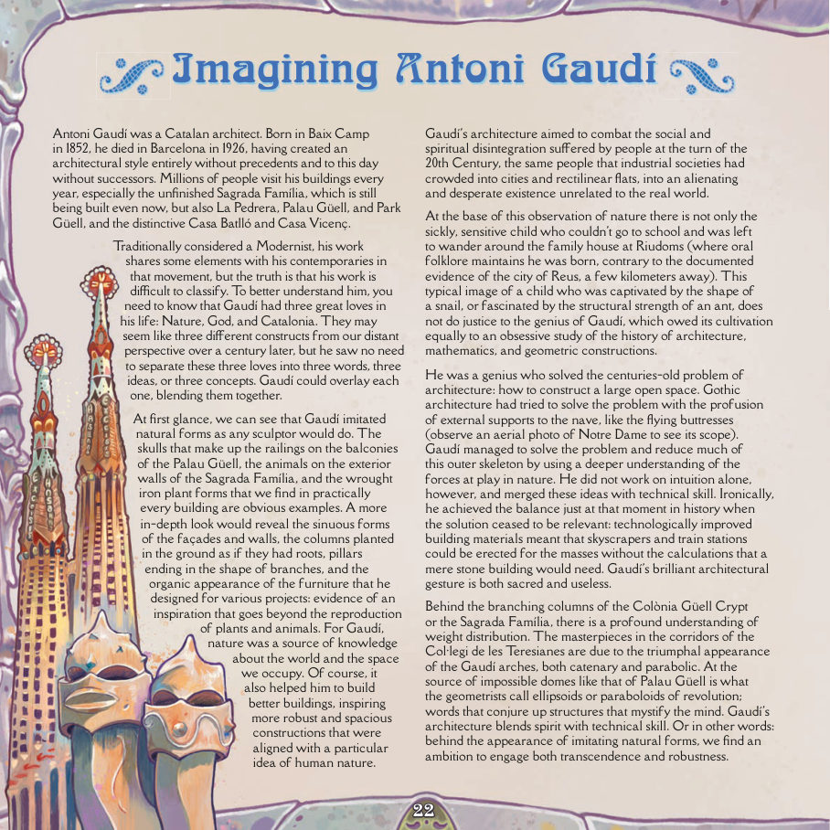


14制作名单
Via Augusta 153, Entl. 4, 08021 - Barcelona
DEVIR AMERICAS LLC.
8123 South Orange Avenue, Suite 166 - Orlando, Florida, FL 32809, USA
www.devirgames.com
游戏名称、术语与美术版权归 DEVIR 及原作者所有。